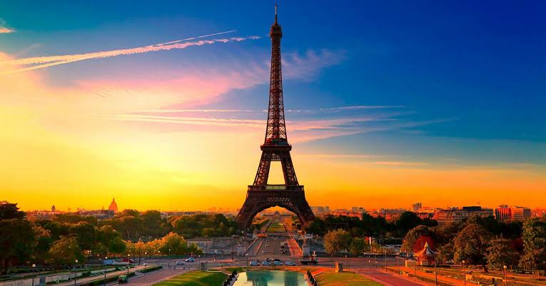

Sobre a cidade
Paris é uma das cidades mais famosas e encantadoras do mundo, conhecida como a “Cidade Luz”. Localizada na França, ela é famosa por seus monumentos históricos, como a Torre Eiffel, o Museu do Louvre e a Catedral de Notre-Dame. Além de sua rica história e cultura, Paris também se destaca pela gastronomia, moda e pelos belos cafés e parques, atraindo milhões de turistas todos os anos.
Pontos turísticos imperdíveis
- Torre Eiffel
- Museu do Louvre
- Catedral de Notre-Dame
Informações rápidas
| Idioma | Moeda | Melhor época |
|---|---|---|
| Francês | Euro | Abril e Junho |
"onde cada esquina conta uma história e cada momento se transforma em uma lembrança"